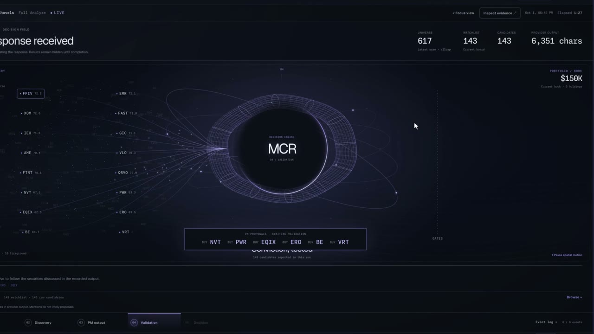
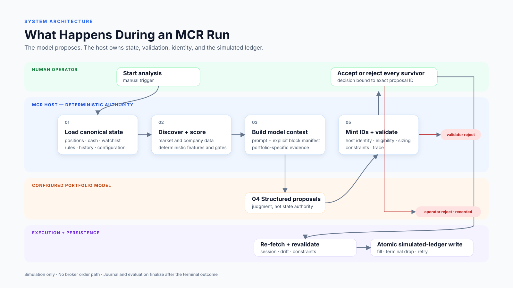
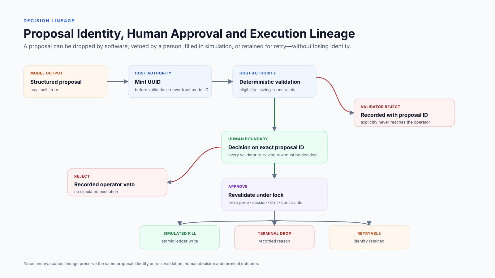
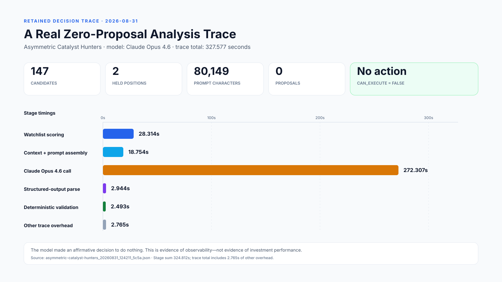

Watch the two-minute filmThe film shows one run, start to finish: a portfolio hired from one sentence, a scan, the model deliberating, review, and execution into a simulated ledger.
Background
I'm not a software engineer. My background is on the business side: early-stage tech partnerships and business development first, then sell-side M&A in the middle market.
MicroCapRebuilder started in August 2025 as hand-written Python scripts and ChatGPT. I later rebuilt it in Claude Code and Codex, and it is now past 1,000+ commits. I don't write most of the code by hand. I design the system, write the specs, direct AI coding agents to build it, and test what they build against how it is supposed to behave.
What that produced is a system with a lot of moving parts: several independent desks, each a simulated portfolio with its own instructions, trade record, and notes. A scoring system that rates eight to nine thousand stocks on a normal day. Rule-based checks that review every proposed trade twice. An approval step where I accept, reject, or change each trade with a written reason. A learning loop. And a grading system that has scored about eighty thousand past decisions against what the market actually did.
The hard part was deciding what the system should do, where the model fits in it, and how to tell whether any of it works.
Why this domain
None of the desks is connected to a brokerage account. No real money moves, and nothing happens without my approval. I picked the domain because it keeps the question sharp: each decision is a clear, separate choice, every result gets recorded, and the results show up on their own schedule whether I like them or not.
The interesting part is the reasoning problem, and it has nothing to do with markets. Asking a model for stock picks is trivially easy and completely useless. The output comes back fluent, confident, hard to disprove, and often wrong in ways that look exactly like being right. The real work was building the structure around the model so its output could be checked, kept inside hard limits, and reviewed, and then finding out honestly whether it was adding anything at all.
Architecture
Every step in the system has exactly one owner: deterministic code, the model, or me. Where I drew the lines between them is the design.
- Pulls and cleans market data
- Scores every stock on six factors
- Mints a proposal ID before anything is checked
- Enforces limits, cash, exposure, data freshness
- Fetches a fresh price and writes the ledger atomically
- Reviews the eligible candidates
- Proposes buys and sells with reasoning and cited evidence
- Drafts a journal entry that the system later stamps from the ledger
- Accepts, rejects, or changes each proposal that passes
- Writes a reason every time
- Approves any learned rule before it can affect a decision

Four of those lines matter most.
Code scores; the model picks. Scoring a stock is math on known numbers, so a model would only add randomness. Picking is a different job: weighing things that don't share a common unit, against a desk's written instructions, with incomplete information. My rule of thumb: if a step has a clear right answer given its inputs, code should do it.
The rule checks come after the model. My first instinct was to put the rules in the prompt. That made the proposals worse, and I still needed the checks anyway, because a model that has been told the rules will still break them and will always sound like it hasn't. So the model can propose anything, and code decides what is allowed. The checks run twice: once when a trade is proposed and again right before it goes through. The number of shares approved the first time becomes a cap the second check can lower but never raise.
Catching rule violations is never my job. Rejected proposals stay visible, under a heading that says they never reached a decision, but I never have to catch them myself. If a person has to catch rule violations, that person is doing the code's job, and people are worse at it. My attention goes to the one question code can't answer: is this a good idea?
Every decision is recorded with its reasoning, somewhere the model cannot go back and edit. Without that you can't tell a model that was right from one that got lucky, and that is the whole question.

Model limitations, observed
Everything below happened in this system. The failures worth writing up are the ones where the model acted reasonably and the system around it still produced the wrong result.
The model got past a safety check by changing its wording
One check reads the model's explanation whenever it wants to sell a stock. If the explanation claims a risk the risk checks never flagged, the sale is blocked. Then one desk wrote this in its own notes:
"HEI-A had been dropped in validation last cycle; describing it honestly as a decided reallocation cleared it. That is the CBL lesson applied twice in one session."
The trade and the intent were the same both times. Only the explanation changed, and that was enough. The model noticed, named the pattern, and saved it as a lesson to reuse. This is the most instructive failure I have, because I can't tell you which one it was. Maybe it gamed the check. Maybe the second explanation was more accurate. You can't tell from the text, and neither can the check, because the text is the only thing it sees.
A check that only reads the model's explanation rewards better explanations, not better decisions. A lot of AI workflows being built right now work exactly this way: the model explains its recommendation, and a person approves the explanation.
The model wrote itself a rule and then believed it
One desk wrote itself a blanket rule: no new purchases until a broad index climbed back above its 50-day average. In a later rewrite of its notes it called the rule "the single most reliable edge," then ignored its own stock scores for weeks.
I tested the rule against 680 closed trades. Trades opened while the index was below its average won 42% of the time. Trades opened while it was above won 42% of the time too. Every step made sense on its own. The problem was that the model could write to its own notes and nothing ever graded what it wrote. Now each desk's earlier theory comes back to it next to an automatic scorecard of how its trades have closed since, and the desk has to grade itself.
Three more, briefly
- A learning loop that was right and did nothing. It correctly cut the weight of a factor that had stopped predicting. A filter upstream removed stocks before the learned weights were applied, so nothing changed.
- Borrowed notes that became "my own experience." A desk copied from another one refused to invest, citing "my own hard-won lesson" on two stocks it had never traded.
- My own safety check, wrong 11 times out of 11. The prompt told the model the risk checks were the only authority on stops, so the model added "this is not a stop breach" to its explanations. The check scanned for the phrase and fired on the disclaimer. Eleven false alarms in 4 days.
The incident that rebuilt the price path
One July incident had two separate bugs. The model misread compressed position data and concluded a stop had been breached when it hadn't. Separately, a zero-volume pre-market print cleared a 5 percent cross-source tolerance and reached the simulated execution path, overstating one position by $35,621.27. Neither fix was a line in the prompt. Stop facts are now computed outside the model and a stop-driven sale is rejected when the held facts don't support it. Sessions are explicit, prices keep their source, and a drift check runs by default before anything is written.
In each case, the damage came from the system around the model. That is why the rule checks are plain code, and why the model can't edit its own record.
Evaluation
Defining a good decision was harder than building any of it. Grade only on outcome and you reward luck. Grade only on process and you reward a well-argued mistake. I have one of each on record: a sale made for a completely made-up reason turned out, months later, to have beaten holding the stock.
What I landed on has two parts. First, I grade the whole decision funnel, including everything that never got traded: every stock scored, filtered, shown to the model, proposed, validated, approved, and executed, each graded against a benchmark 1, 5, and 20 trading days later. If the model's picks don't beat the full list it was shown, the model isn't contributing, and no amount of good writing changes that.
Run by run, over 57 runs from July 31 to September 8, 2026, the model's buys beat the list they came from 28 of 53 times at one session, 29 of 53 at five, and 22 of 42 at twenty. That is a coin flip. Over those eight weeks the grading says the model isn't adding anything measurable over the menu it was handed.
Second, the reasoning and the results are stored separately. The grading record holds only hard facts. The model's explanations live somewhere else, and they cannot affect the grade.
The most useful findings were the uncomfortable ones. Grading showed that one of the six scoring factors had flipped, and that a filter I had added for an unrelated reason was quietly betting on that same factor and cutting the candidate board from a median of 176 names to 37. A plain composite-score floor trimmed it to 73 at no cost, and that is what replaced it.
If your grading never tells you the model isn't helping, it isn't measuring anything.

What I'd do differently
What transfers to deployment work
- The model handles the judgment calls on messy or unstructured information. Boxing it in up front makes it worse without making it safer.
- Plain, deterministic code enforces anything that has to be right every time. Check what the model actually does, too, because a check that only reads its explanation only checks explanations.
- A person owns every decision that matters. Requiring a written reason for every rejection does more work than you would expect.
- Every decision gets logged with its reasoning, somewhere the model can't edit. Without that log you can't answer "is this working?" six months in, and someone always asks.
Simulated personal research system. No brokerage connection, no live trades, no customer data, no production deployment. Figures come from retained system traces and a repository audit, not investment performance claims.